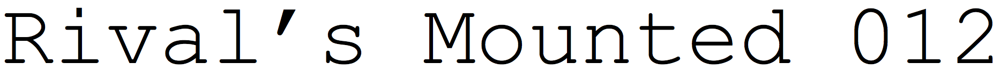
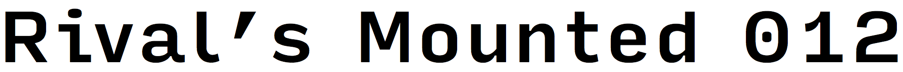
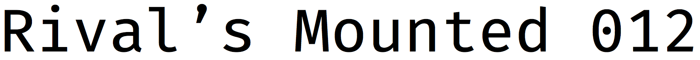

courier new
triplicate
pitch

input

fira mono
I’m in an awkward position. As your typography advisor, I’ve counseled you not to use monospaced fonts.
But the truth is—I really like them. The golden age of monospaced fonts was probably the 1950s, when IBM led the typewriter industry and released a series of great monospaced designs. One of these was Courier. But the system font Courier New is a beastly imitation of the original: spindly, lumpy, and just plain ugly.
As an antidote, I’ve created Triplicate, a monospaced font family influenced by several typewriter fonts of the ’50s, and optimized for body text. Triplicate has genuine italic styles (instead of a sloped roman like Courier) and small caps too.
Pitch and Input show there’s still room for design exploration in monospaced fonts. Fira Mono is also very nice, and one of the few free fonts I recommend without reservation.